01 Drift
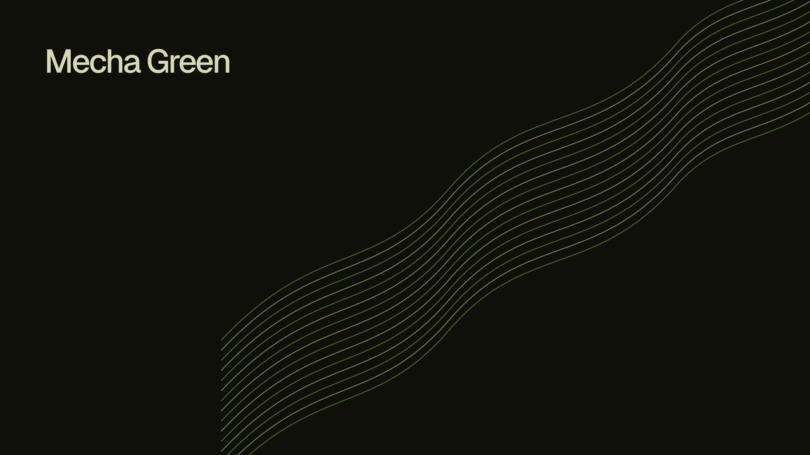
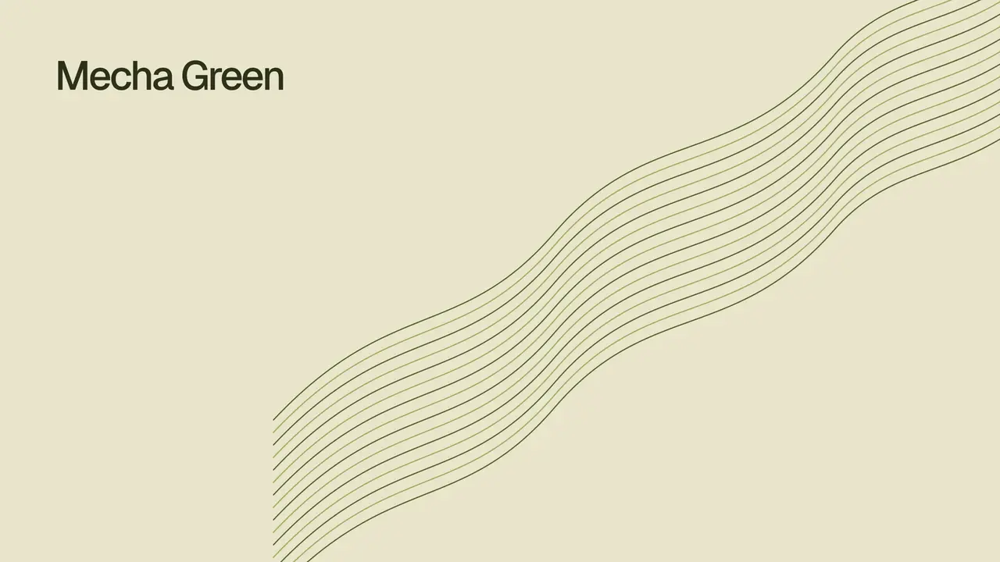
Curvas amplias que cruzan el lienzo en diagonal y dejan el wordmark arriba a la izquierda.
Mecha Green / nuevas variaciones
Seis composiciones dentro de la misma familia topográfica. Sin HUD, sombras, gradientes ni texturas. Ver versiones animadas →


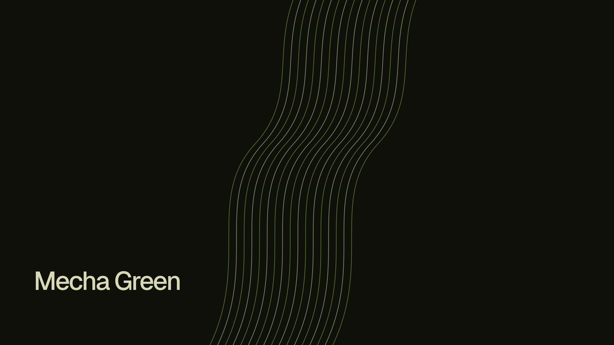
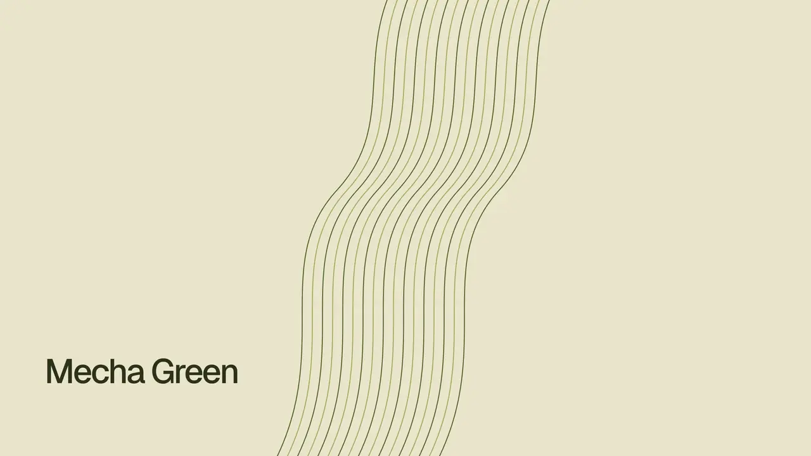
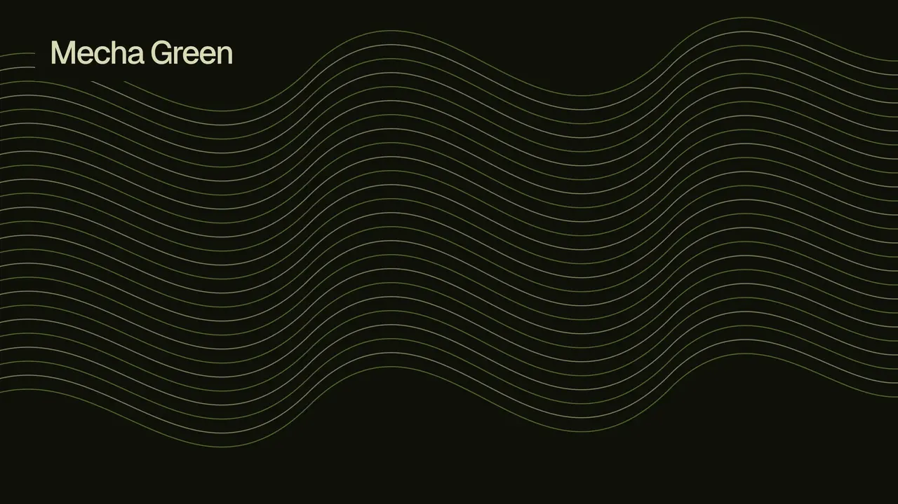
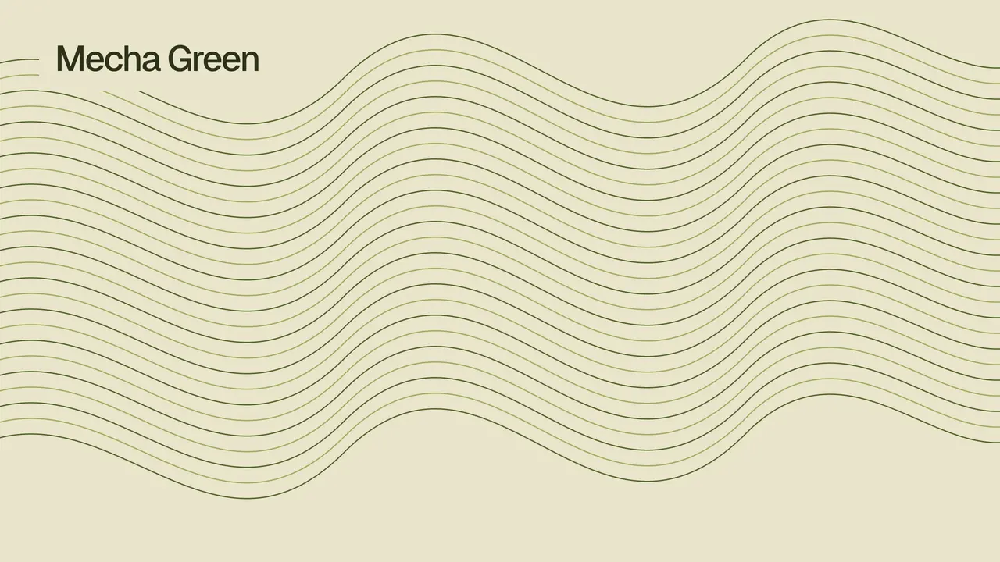
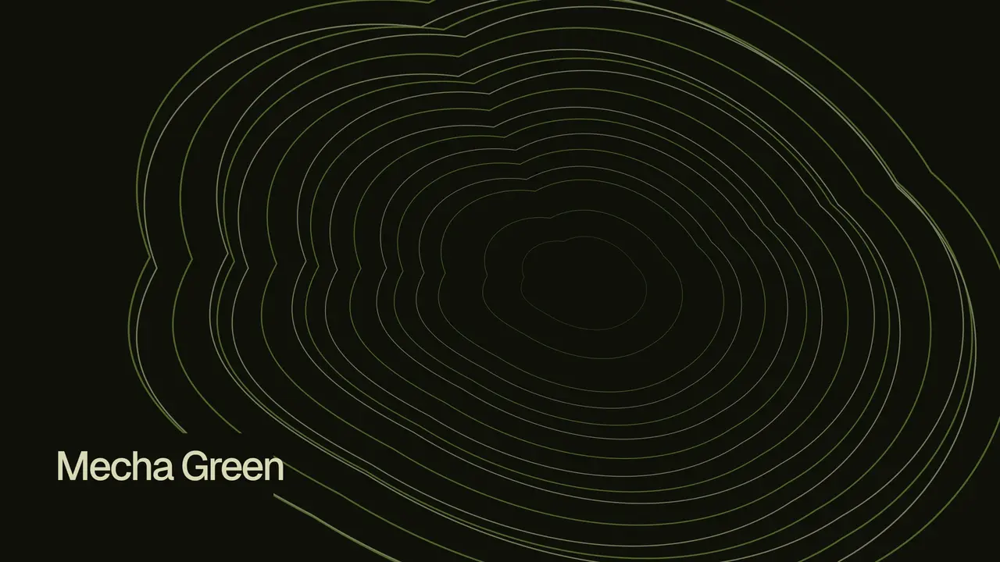
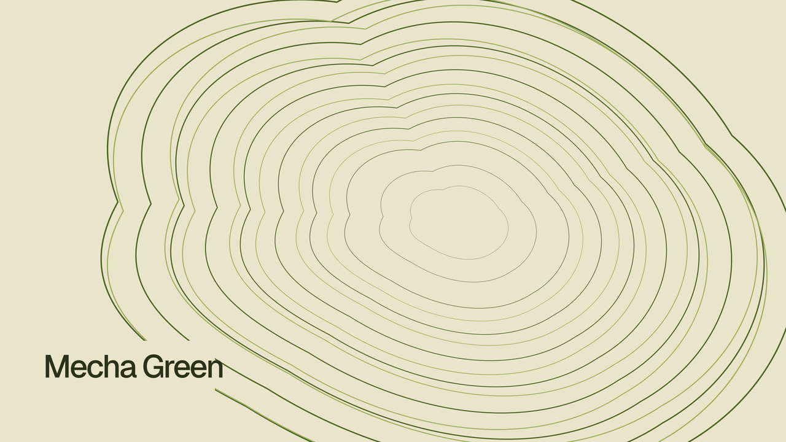
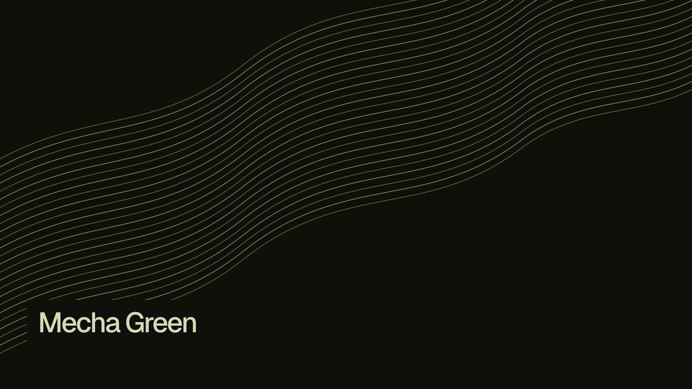
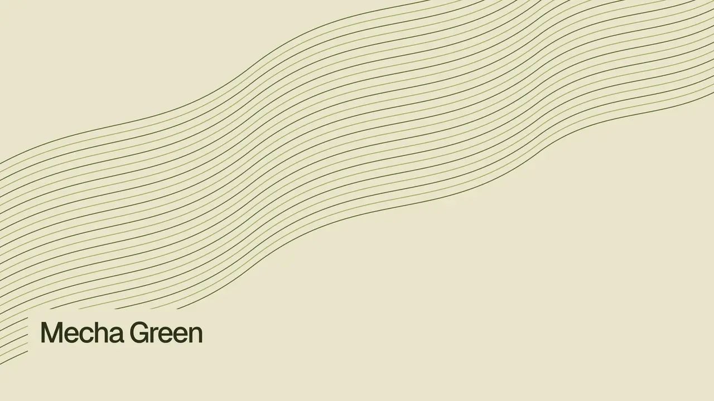
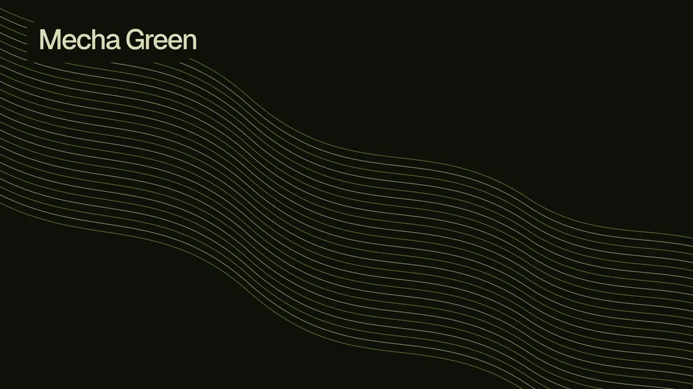
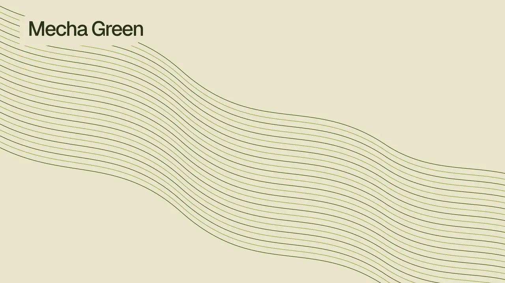